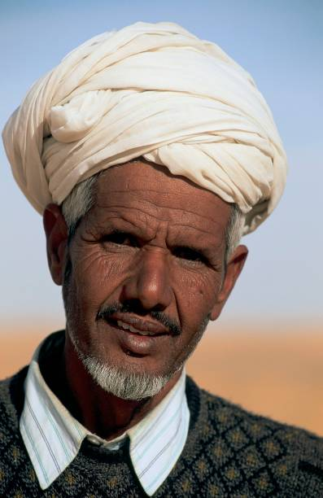
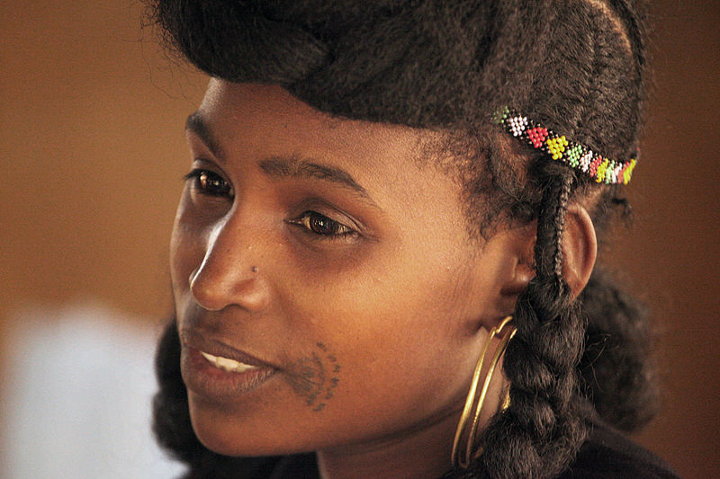
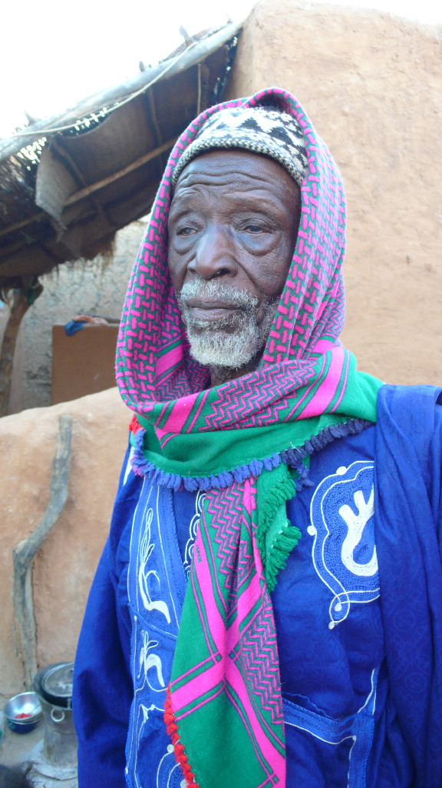

Les différentes ethnies de Mauritanie
Les Bidanes "Maures Blanc"
Les Bidhanes, ou Maures blancs, sont issus des populations berbéro-arabes.
Ils parlent l’arabe dialectal, appelé hassaniya, et sont traditionnellement des nomades.
Leur culture est marquée par la poésie, la musique (comme le tbal et l’ardin),
et une organisation sociale hiérarchisée.
Les Peuls
Les Peuls, appelés aussi Fulbé, sont un peuple pastoral connu pour
leur culture nomade et leur expertise en élevage. Ils parlent le pular et
sont majoritairement musulmans. Leur mode de vie traditionnel est centré sur l’élevage de bétail,
bien qu’ils soient également présents dans l’agriculture et le commerce.
Les Haratines "Maures Noirs"
Les Haratines sont souvent appelés les Maures noirs, descendants d’esclaves affranchis.
Ils partagent la langue et une grande partie de la culture hassaniya des Bidhanes,
mais leur identité sociale reste distincte. Majoritairement agriculteurs et ouvriers,
ils jouent un rôle essentiel dans l’économie rurale et urbaine du pays.
Les Soninke
Les Soninkés sont l’un des groupes les plus anciens de la région, historiquement liés à l’Empire du Ghana.
Ils parlent le soninké et vivent principalement dans les régions sud de la Mauritanie. Majoritairement agriculteurs,
ils cultivent le mil et le sorgho. Leur culture est marquée par un fort sens communautaire.